TRAIL WARS — cartoon art direction approvalTRAIL WARS / ART DIRECTION REVIEW / 10 NOV 2026
Small racers.
Big personality.
Three original directions. One honest playfield.
Research → compare → design → your approval.
All proposed screens are editable design mockups, not Roblox captures or implemented UI. No gameplay, renderer, persistence or sound uploads were changed in this phase.
01 / EXISTING GAME — ACTUAL STUDIO CAPTURES
A foundation worth preserving.
A hierarchy worth improving.
Starting HEAD verified as b1767db. Pending Candy Comet work and QA were preserved as 7419afd on the playable visual branch before this separate design branch. bbd39c7 remains the known-working fallback.
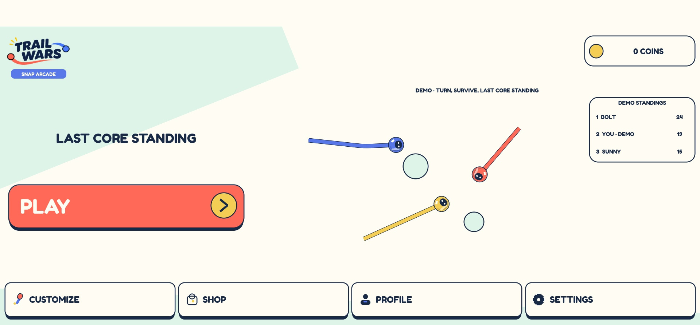
Current Home Repeated bordered navigation; cartoon faces are present.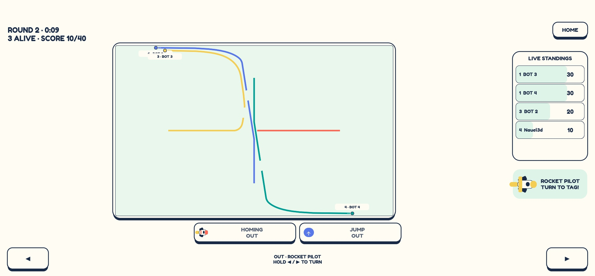
Current gameplay Actual pre-detail-threshold capture; small racers and equally weighted boxes.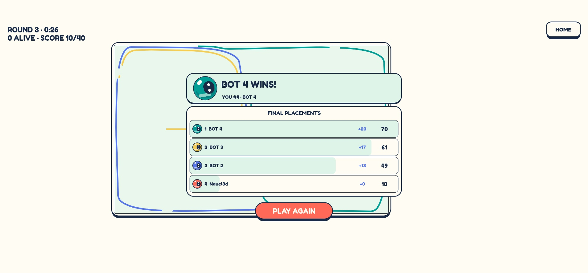
Current Results Actual winner strip and repeated standings rows.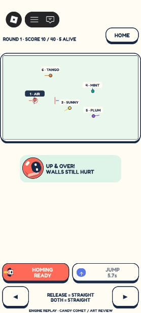
Earlier approved slice / portrait Actual Studio replay, not a physical phone or real human match.Read the evidence-based audit · Baseline actual Studio recording · Recent actual Studio recording
Carry-forward risk: latest two-client test failed client Final/winner presentation assertions. This checkpoint is not certified ready. Managed-client render stalls remain unresolved; no engine cause or physical-device FPS is claimed.
02 / REAL REFERENCE EVIDENCE
Eight games. Different lessons.
Saved screenshots were visually inspected. Historical dates are explicit. We do not endorse every interface or claim to have viewed moving footage/audio when only a source link was available. Reference images belong to their respective creators and are not Trail Wars assets.
Analysis of palette, type, construction, character integration, HUD, strengths, weaknesses and evidence gaps · Attribution and download manifest
What transfers
Character-first composition. PHIGHTING and Dandy show why expression should carry the screen, while supporting chrome gets quieter.
One visual substrate. Block Tales supports a consistent paper hypothesis. A sticker shape must agree with its lettering, outline and icon art.
Selective, not universal. Tower Heroes inspection is useful; Bee Swarm/Epic inventory density is a counterexample for active steering.
Beyond Roblox: Snipperclips official gallery for shape-as-character; Mario Party Jamboree official gallery for physical placement. These motivate original directions, not copied assets or measured animation timings.
03 / ORIGINAL ALTERNATIVES — UNIMPLEMENTED
Three construction systems.
Not three recolors.
A / Candy Comet Arcade
Finned comets, selective toy depth, open Home and quiet match framing.
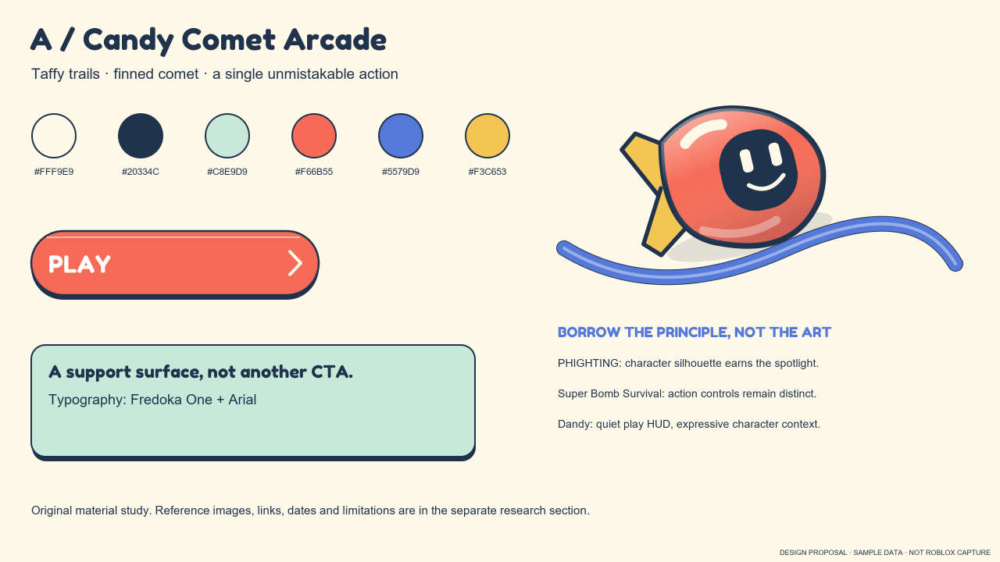
moodboard Original design proposal home-desktop Original design proposal
home-desktop Original design proposal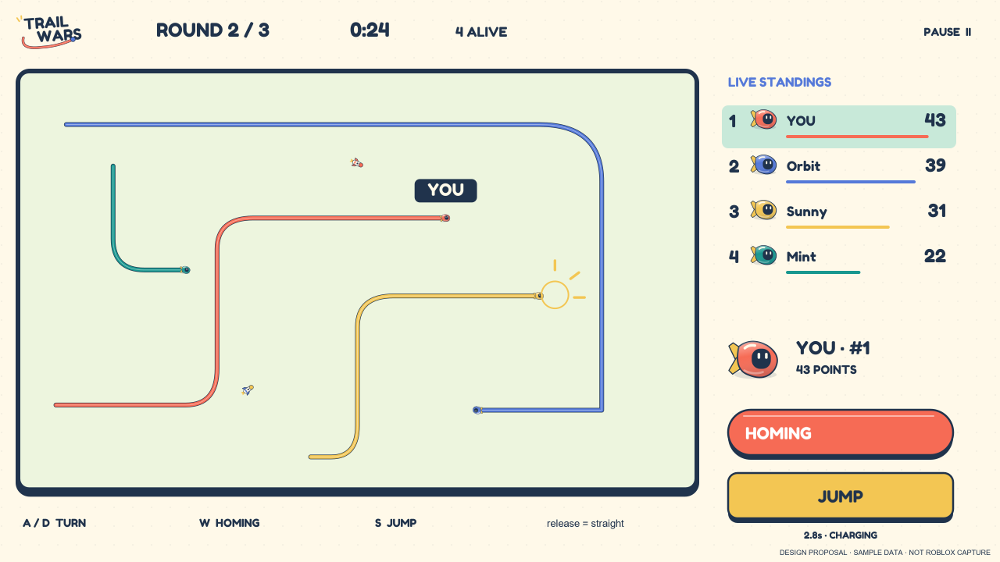
hud-desktop Original design proposal results-desktop Original design proposal
results-desktop Original design proposal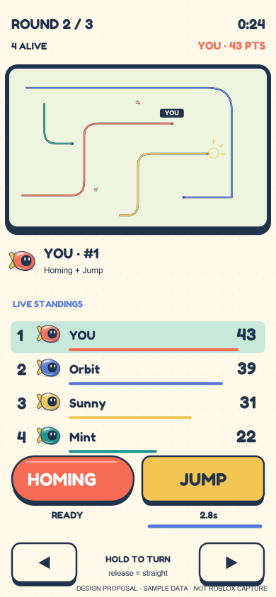
hud-portrait Original design proposalB / Stickerbook Showdown
Cut edges, Kalam lettering, race-notes HUD and a round-by-round scrapbook.
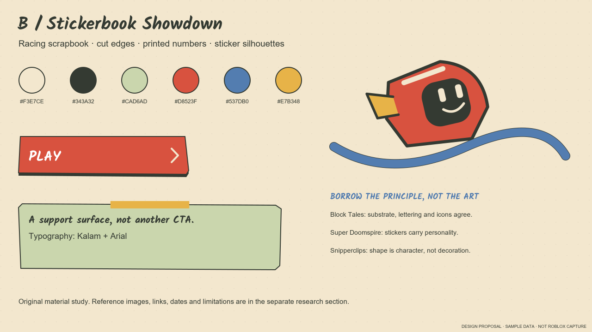
moodboard Original design proposal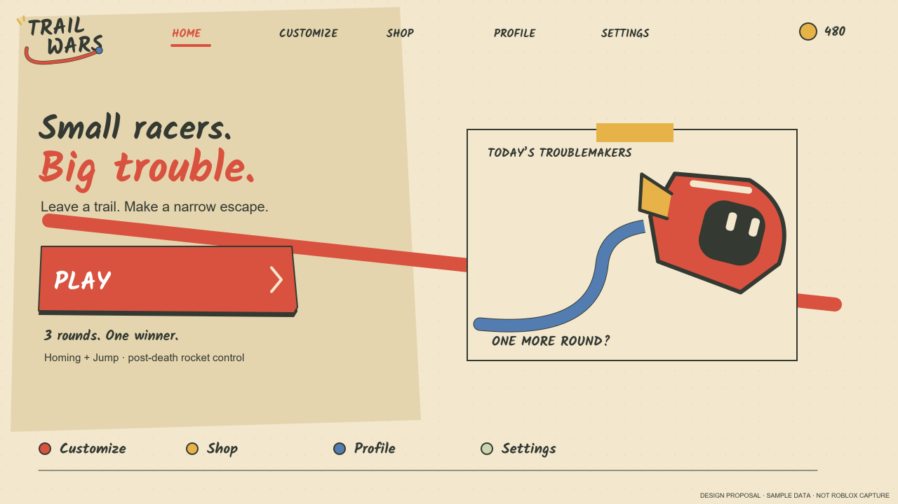
home-desktop Original design proposal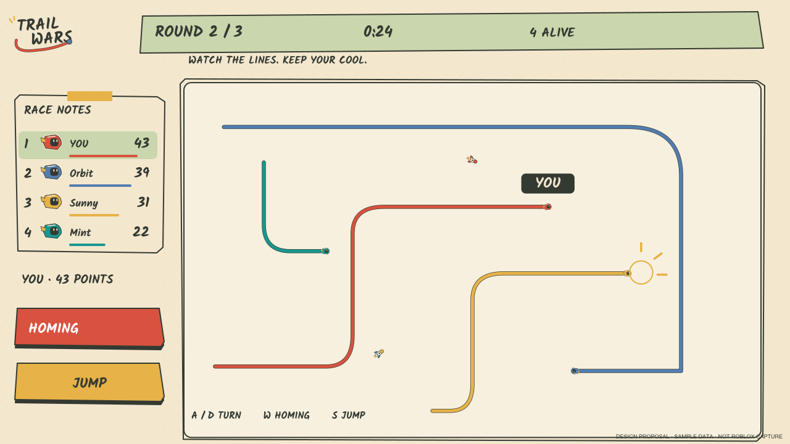
hud-desktop Original design proposal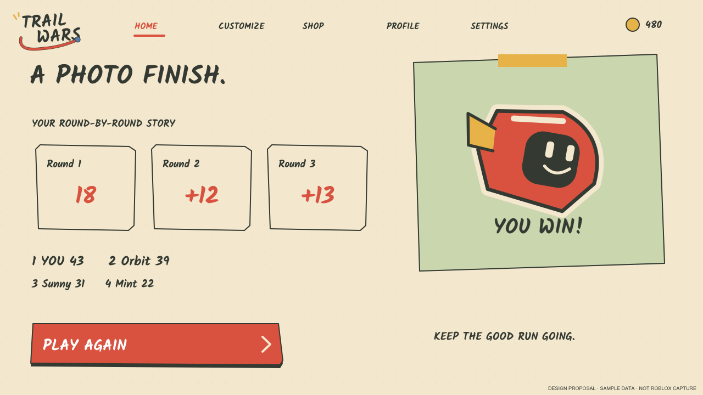
results-desktop Original design proposal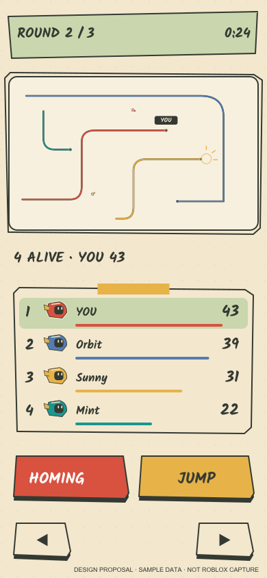
hud-portrait Original design proposalC / Miniature Toy Arena
Molded capsules, ability paddles, score tokens and podium results.
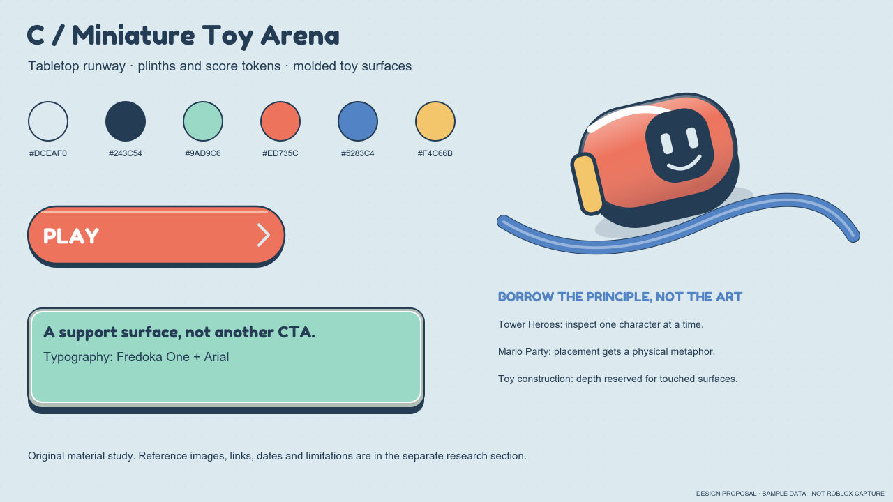
moodboard Original design proposal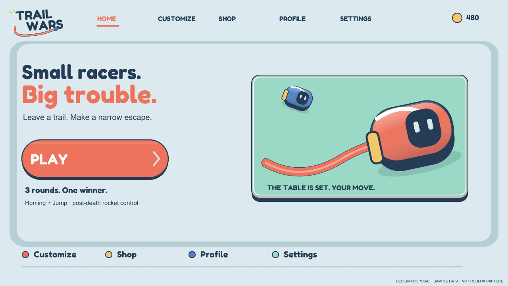
home-desktop Original design proposal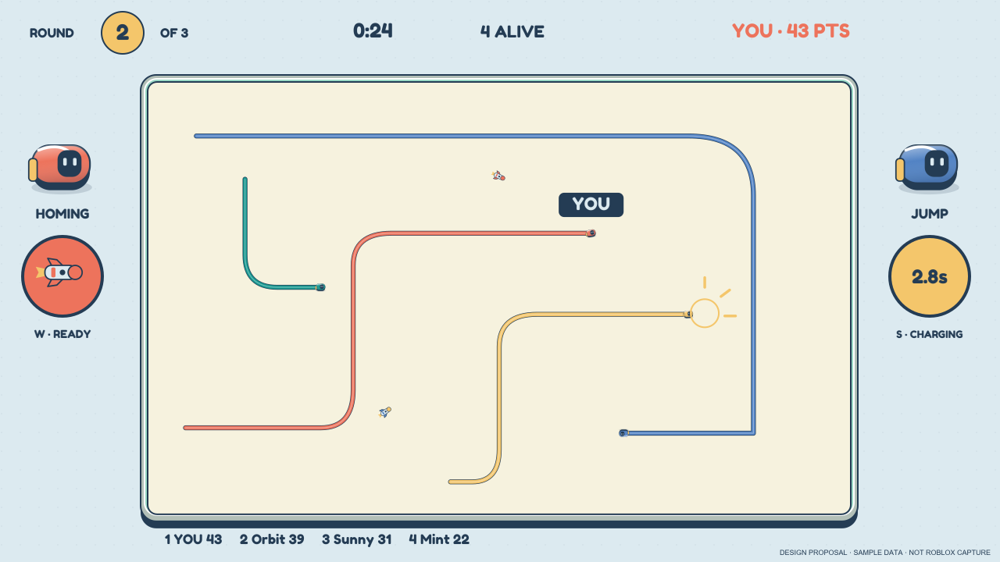
hud-desktop Original design proposal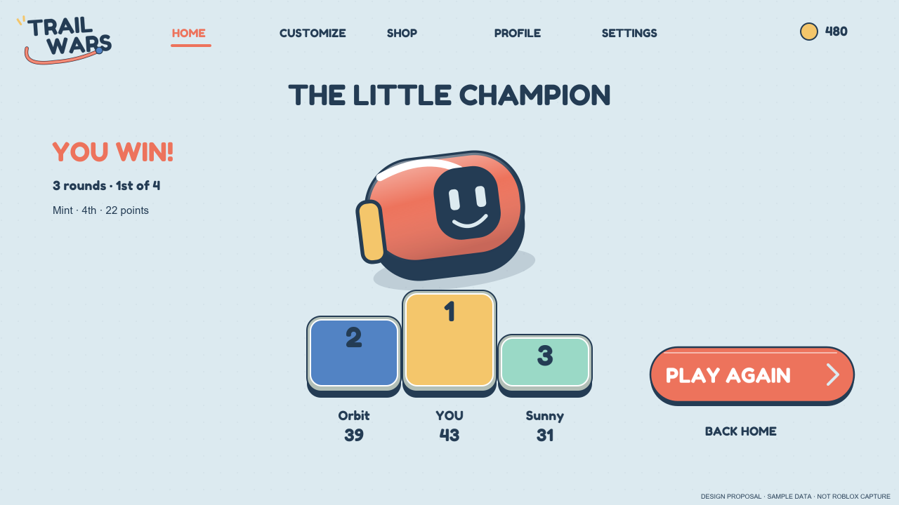
results-desktop Original design proposal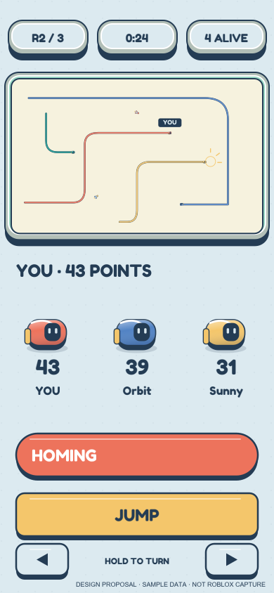
hud-portrait Original design proposalWeighted comparison and candid trade-offs · Open 3 × 3 comparison sheet
Recommendation: A, subject to your approval. Strongest continuity with SNAP ARCADE and existing native foundations. B is the strongest handmade alternative. C has the best tabletop ceremony but the largest mobile/layering risk. No option receives a free pass on competitive readability.
04 / REFINED PROPOSAL A — SAMPLE DATA
Candy Comet, with intent.
A large character where it helps. Small truthful racers where it matters. The active arena stays 1300:800; its geometry is not enlarged to flatter the design. Home does not scroll.
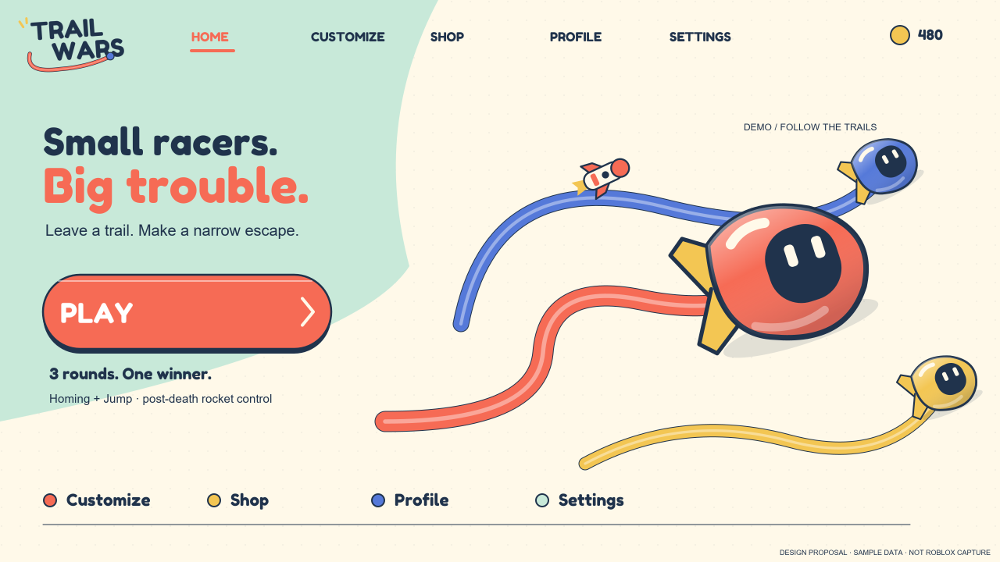
Proposed Home / desktop 1280 × 720 Original editable design; not a Roblox screenshot.a-home-small-portrait 320 × 568 usable compositionEditable SVG
a-hud-small-portrait 320 × 568 usable compositionEditable SVG
Profile numbers are illustrative, not live account data. Shop/Customize use the four actual catalog entries; inspection, ownership and equip states remain distinct. No live purchase is represented as working.
05 / PARTS AND STATES
Depth belongs to actions.
a-component-system Original separate components; native labels and controls would remain interactive.navigation-icons Original separate components; native labels and controls would remain interactive.a-important-states Original separate components; native labels and controls would remain interactive.Racer source · Homing source · Turret source · 9-slice action skin · Style guide / asset plan
06 / MOTION AND SOUND — LOCAL DESIGN PREVIEW
Anticipation. Action. Consequence. Rest.
Motion sequence Original timing hypotheses, not measured Nintendo animation.Complete event, cancellation, reduced-motion and audio storyboard
Existing original sound candidates
Prepared local WAVs only. Optional manual playback below. Current Roblox fallback is silent; no assets were uploaded or enabled during this phase.
07 / REVIEW GATE
Choose the world.
Then build one slice.
Approve A, B or C—or specify what needs revision. No visual approval has been assumed. The next implementation phase would first prove one component/Home/HUD slice, fix the carried client-Final regression, and perform actual-engine comparisons before extending the rest.
Roblox feasibility, input, safe areas, accessibility and performance risks · Design principles · Package inventory, reproduction and limitations
Design branch only. No game publishing, merging, sound upload, server/economy change or replacement UI implementation.